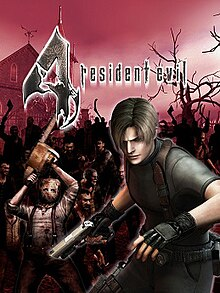
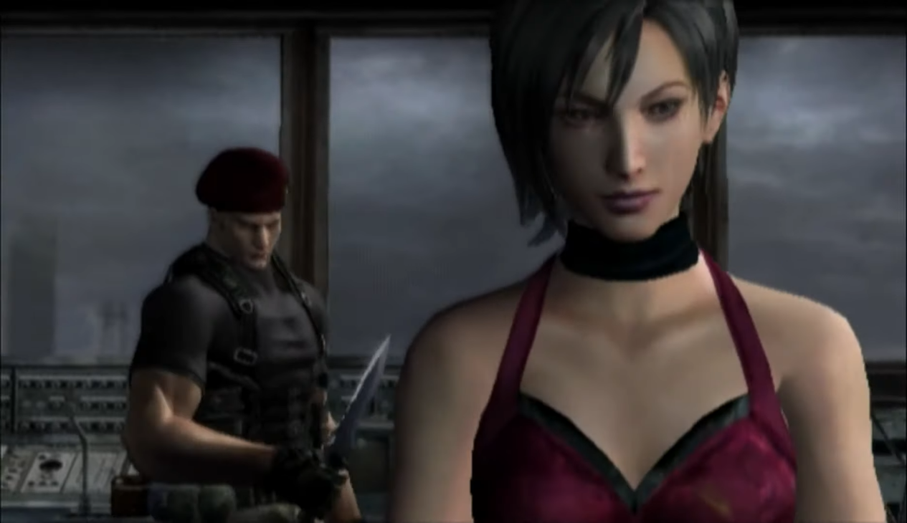

Showcasing some of the best, most fun and most influential polygonal video games.
With the PlayStation 2, Xbox, GameCube, and Dreamcast, the sixth generation refined and expanded what 3D gaming could be. Worlds became larger, characters more expressive, and gameplay more immersive than ever before.
This section dives into the golden age of 3D gaming—where developers mastered the craft of polygons, physics, and cinematic storytelling. From vast open worlds to genre-defining innovations, explore the era that shaped the future of gaming.
Capcom - 2005
Resident Evil 4 revolutionized the survival horror genre with its over-the-shoulder perspective, intense action, and dynamic enemy encounters. Players take on the role of Leon S. Kennedy, a government agent sent to a remote European village to rescue the president’s kidnapped daughter, Ashley Graham.
What begins as a simple mission quickly spirals into terror as Leon faces the fanatical cult known as Los Illuminados and their parasitic creations, the Ganados. With tight gunplay, resource management, and pulse-pounding set pieces, Resident Evil 4 masterfully blends horror and action, cementing itself as one of the most influential games of all time.